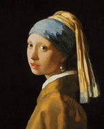

Hollandalı sanat tarihçisi Ludwig Goldscheider, Jan Vermeer (1632-1675) tarafından yapılan İnci Küpeli Kız portresine “Kuzeyin Mona Lisası” adını vermiştir.

Karanlık bir arka plana karşı konumlanmış olan kız, başını çevirmiş ve dudakları hafifçe aralık halde, resmin dışına doğru bir bakış atar. Gözleri ve ağzı, beyaz ve pembe hafif lekelerle vurgulanmıştır. Gözyaşı damlası şeklindeki inci küpesinde yansıyan ışık, koyu renk boya ile bir kontrast yaratmıştır. Sade altın rengi elbisesi, zaman veya mekana dair herhangi bir şeyi açığa vurmaz, ama başına doladığı türban benzeri fular, ona egzotik bir hava katar. Her ikisi de -elbise ve fular - Vermeer’in kumaş katlarını göstermedeki becerisini ortaya koyar.
İnci Küpeli Kız, Vermeer’in resmettiği büst uzunluğundaki yalnızca üç veya dört figüründen biridir. Büyük ihtimalle, Rembrandt tarafından da uygulanan, karakter veya ifadenin belirli bir kişiye tam benzerliğe izin vermediği bir çeşit resim tekniği olan ‘tronie’ olarak tasarlanmıştır. New York’ta Metropolitan Sanat Müzesi’nde sergilenen, aynı zamanda Zanaatkar Kız olarak da adlandırılan Vermeer’in Genç Bir Kadın Çalışması eserine bir ilave veya tamamlayıcı bir eser olarak tasarlanmış da olabilir.
Bazı insanlar, resim için kullanılan modelin Vermeer’in en büyük kızı Maria olduğu varsayımında bulunmaktadırlar; diğerleri ise onun Vermeer’in patronu Pieter van Ruijven’in kızı Magdalena olduğunu tahmin etmektedirler. Tabloyla aynı adı taşıyan çok satan romanın yazarı Tracy Chevalier, kızı, Vermeer’in aşık olduğu hizmetçi kız Griet olarak hayal etti. Chevalier’in romanının film versiyonu da, 2003’te gösterime girdi.
Kadının kimliği konusundaki gizem, yalnızca 1881’de sanat koleksiyoncusu Arnoldus Andries des Tombes’in iki guldene aldığı müzayedede halka gösterilen eserin ‘aura’sına büyük katkıda bulunmaktadır. Tombes vasiyetinde eseri, 1902’deki ölümünden beri sergilenmekte olduğu Lahey’deki Mauritshuis’e bağışladı.
Sanat eleştirmeni Jan Veth’in belirttiği gibi, İnci Küpeli Kız resmi sanki “ezilmiş incilerin tozuyla harmanlanmış” gibi görünür.
EK BİLGİLER:
1. Marilyn Chandler McEntyre tarafından Vermeer’in resimlerine dayanan bir şiir koleksiyonu olan Sessiz Işık, “İnci Küpeli Kız” adında bir şiir de içerir.
2. 1994’te resim, Vermeer’in eserlerinin büyük bir retrospektif sergisi için Washington’a gönderilmeden önce kapsamlı bir restorasyondan geçirildi.